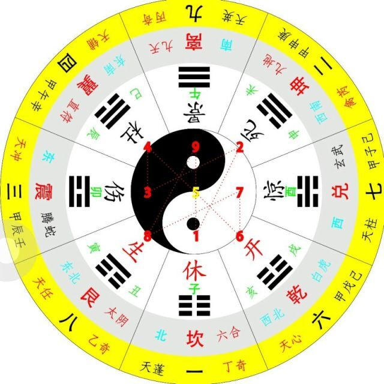

shape-outside多边形文字环绕
属性定义了一个可以是非矩形的形状，相邻的内联内容应围绕该形状进行包装。
默认情况下，内联内容包围其边距框;
shape-outside提供了一种自定义此包装的方法，可以将文本包装在复杂对象周围而不是简单的框中。
/* 关键字值 */
shape-outside: none;
shape-outside: margin-box;
shape-outside: content-box;
shape-outside: border-box;
shape-outside: padding-box;
/* 函数值 */
shape-outside: circle();
shape-outside: ellipse();
shape-outside: inset(10px 10px 10px 10px);
shape-outside: polygon(10px 10px, 20px 20px, 30px 30px);
/* url 值 */
shape-outside: url(image.png);
/* 渐变值 */
shape-outside: linear-gradient(45deg, rgba(255, 255, 255, 0) 150px, red 150px);
/* 全局值 */
shape-outside: initial;
shape-outside: inherit;
shape-outside: unset;

太极八卦即是阐明宇宙从无极而太极，以至万物化生的过程。其中的太极即为天地未开、混沌未分阴阳之前的状态。
两仪即为太极的阴、阳二仪。《系辞》又说：“两仪生四象，四象生八卦”。
其意指浩瀚宇宙间的一切事物和现象都包含着阴和阳，以及表与里的两面。
而它们之间却既互相对立斗争又相互资生依存的关系，这即是物质世界的一般律，是众多事物的纲领和由来，也是事物产生与毁灭的根由所在。太极八卦图，以同圆内的圆心为界，画出相等的两个阴阳鱼表示万物相互关系。
阴鱼用黑色，阳鱼用白色，这是白天与黑夜的表示法。阳鱼的头部有个阴眼，阴鱼的头部有个阳眼，表示万物都在相互转化，互相渗透，阴中有阳，阳中有阴，阴阳相合，相生相克，即现代哲学中和矛盾对立统一规律表示法。
科学太极八卦图，描绘了《易经》阴阳理论中阴阳交感生万物的道理；质能互相转化原理阐述了能量平衡创生物质的原理。
二者经过比照辉映确是惊人的契合乃至完全一致，也充分证明了同是真理必然产生殊途同归的结果。
在这里，将《易经》中的阴阳两仪与质能转化原理中的基本高低能位相比较，可以这样认为：阴仪即是基本低能位，阳仪即是基本高能位，二者通称为一个阶能位。
单一阴仪和阳仪的结合形式是少阳与少阴，也就是单个的基本高低能位只能构成基本能量系统，平衡后创生了基本物质粒子--质量子。
因平衡旋向有正反，导致质量子有两种形式，就是极性不同的正反质量子，如若视少阳为正质量子，少阴就是反质量子，它们是最简单的第一层次物质，称谓一重物质。
假若宇宙间只有一阶能位和一重物质，那么宇宙的具体模式将是少阴和少阳构成的两仪整体结构，上下为少阳，右左为少阴。